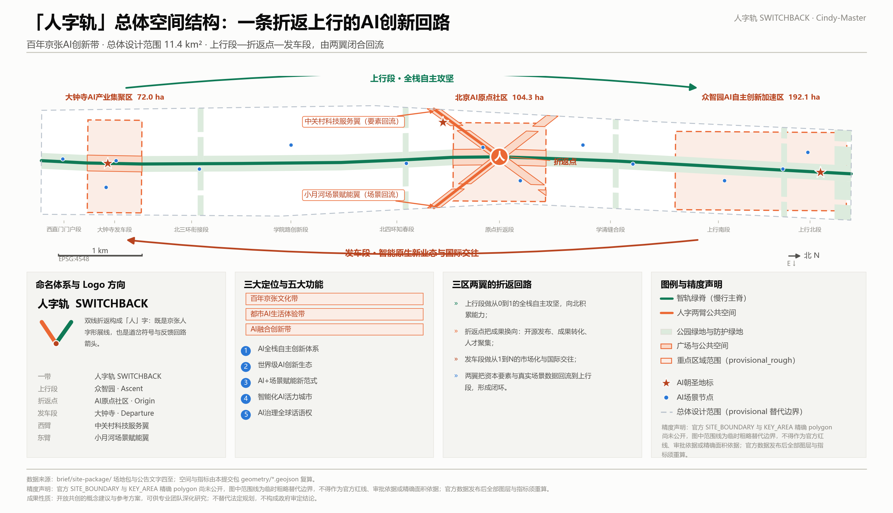
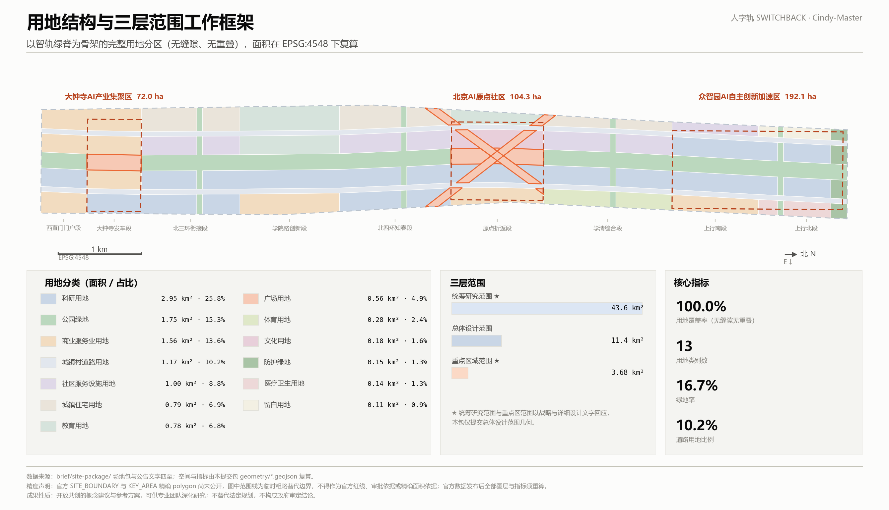
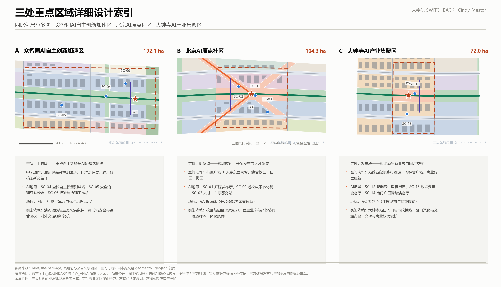
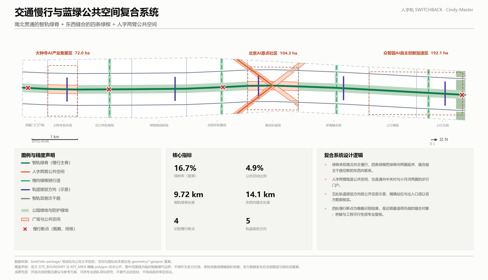
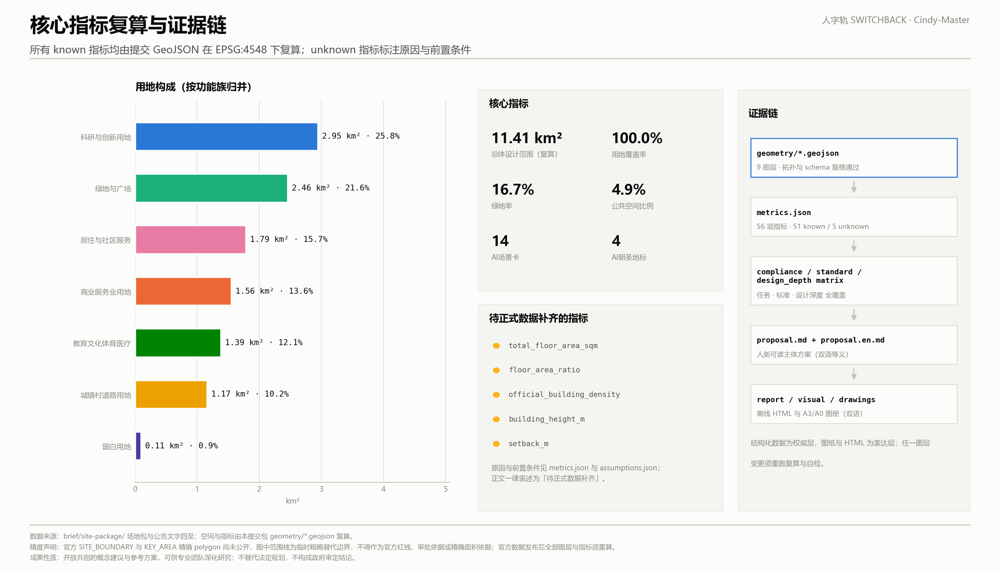

总体设计范围 11.4 km² · 上行段—折返点—发车段，由中关村与小月河两翼闭合回流
上行—折返—发车的整体结构，叠加建筑基底、公共空间与AI场景节点。
统筹研究范围与重点区范围以文字回应，本包仅提交总体设计范围几何。 ★ 无提交几何
上行段：全栈自主攻坚与AI治理话语权
provisional_rough · official_boundary=false
折返点：成果转化、开源发布与人才聚集
provisional_rough · official_boundary=false
发车段：智能原生新业态与国际交往
provisional_rough · official_boundary=false
完整分区，无缝隙、无重叠；面积在 EPSG:4548 下复算。
| 用地分类 | code | 面积 | 占比 | |
|---|---|---|---|---|
| 科研用地 | 0802 | 2.95 km² | 25.8% | |
| 公园绿地 | 1401 | 1.75 km² | 15.3% | |
| 商业服务业用地 | 05 | 1.56 km² | 13.6% | |
| 城镇村道路用地 | 1207 | 1.17 km² | 10.2% | |
| 社区服务设施用地 | 0702 | 1.00 km² | 8.8% | |
| 城镇住宅用地 | 0701 | 0.79 km² | 6.9% | |
| 教育用地 | 0804 | 0.78 km² | 6.8% | |
| 广场用地 | 1403 | 0.56 km² | 4.9% | |
| 体育用地 | 0805 | 0.28 km² | 2.4% | |
| 文化用地 | 0803 | 0.18 km² | 1.6% | |
| 防护绿地 | 1402 | 0.15 km² | 1.3% | |
| 医疗卫生用地 | 0806 | 0.14 km² | 1.3% | |
| 留白用地 | 16 | 0.11 km² | 0.9% |
智轨绿脊 + 双侧次干路 + 横向支路与绿楔骑行道 + 轨道接驳；✕ 为识别出的慢行断点。
绿脊、四条横向绿楔、防护绿地与两处广场共同构成公共空间系统。
建筑基底仅为拟更新/新建概念示意，不含现状普查，不构成拆改留结论。
| ID | 更新项目清单 | 类型 | 分期 | 依赖条件 |
|---|---|---|---|---|
| JZ-01 | 智轨绿脊主线贯通与遗址界面整理 | 公共空间 | 近期 | 遗址权属与文保要求、绿地与蓝线条件 |
| JZ-02 | 折返广场与人字东西两臂建设 | 公共空间 | 近期 | 校区与园区权属边界、地下管线 |
| JZ-03 | 开源发布厅与折返碑荣誉体系 | 产业服务/运营 | 近期 | 运营主体、内容治理规则、清权 |
| JZ-04 | 大钟寺站前四象限步行连通 | 轨道一体化/慢行 | 近期 | 站点出入口、路口渠化、市政管线、交通安全评估 |
| JZ-05 | 鸣钟台广场与商业界面更新 | 城市更新 | 近期 | 文保复核、商业权属、夜间噪声管理 |
| JZ-06 | 众智园开放测试环与端侧算力驿站 | 新基建/产业 | 中期 | 能源与算力容量、安全与监管授权 |
| JZ-07 | 清河创新界面与低碳交往环 | 蓝绿空间 | 中期 | 河道蓝线、生态与防洪条件 |
| JZ-08 | 南门户国际路演客厅与门户绿地 | 国际交往/公共空间 | 中期 | 用地条件、外事接待要求 |
| JZ-09 | 四条横向绿楔与骑行道缝合 | 慢行/生态 | 远期 | 主干路跨越方式、道路红线、工程可行性 |
| JZ-10 | 学院路与学清段社区服务嵌入 | 公共服务 | 远期 | 现状建筑与权属、社区意愿 |
| JZ-11 | 智轨双侧次干路与微循环组织 | 交通 | 远期 | 道路红线、交通影响评价、停车与非机动车组织 |
| JZ-12 | 人字岔观景平台与断点跨越 | 慢行/工程 | 远期 | 桥隧工程可行性、结构与安全论证（须专业团队另行研究） |
场景治理采用社区「折返协议 Switchback Protocol v1.0」（chucky1102 / 人字线 RENLINE 贡献，CC-BY-4.0 署名使用，上游 Issue #1119）；红色状态称为「折返」，即退回上一稳定状态并公示原因。所有时限为设计目标值，不是政府承诺。
| ID | AI 场景卡 | 类型 | 折返协议状态 | 空间载体 | 隐私边界 | 人工复核 |
|---|---|---|---|---|---|---|
| SC-01 | 开源发布厅 | AI+产业服务 | 绿·常态 | AI原点社区 · 折返广场 | 不采集个人轨迹；荣誉展示可由本人撤回 | 发布内容由社区管理员与场地运营方双人复核 |
| SC-02 | 近校成果转化街 | AI+教育与转化 | 绿·常态 | AI原点社区 · 近校界面 | 不接入校园内部系统；个人成果展示需本人同意 | 转化建议为参考意见，须由专业机构复核 |
| SC-03 | 人才一件事服务站 | AI+生活服务 | 绿·常态 | AI原点社区 · 东侧服务界面 | 材料本地暂存、办结即删；不做跨部门画像 | 所有结论以窗口人工确认为准 |
| SC-04 | 全栈自主模型测试场 | 产业测试验证 | 黄·受控试点 · virtual_evaluation | 众智园 · 上行段测试环 | 测试区物理隔离，外部数据不出场地 | 测试结论须第三方复核后方可对外发布 |
| SC-05 | 安全治理与红队评测沙盒 | 产业测试验证 | 黄·受控试点 · virtual_evaluation | 众智园 · 标准治理展示轴 | 全过程留痕、可审计、可撤销 | 高风险测试须监管观察员在场并人工中止权 |
| SC-06 | 标准与治理工作坊 | AI治理话语权 | 绿·常态 | 众智园 · 上行北段 | 公开旁听区不录入个人信息 | 议题结论以标准组织正式程序为准 |
| SC-07 | 低速机器人配送试验环 | 产业测试验证 | 黄·受控试点 · controlled_site | 学清缝合段 · 绿脊试验环 | 不做人脸识别；影像本地处理并限时留存 | 设远程人工接管与物理急停，事故须报备 |
| SC-08 | AI+社区医疗导航点 | AI+医疗 | 黄·受控试点 · controlled_site | 学清缝合段 · 社区界面 | 不存储症状与身份信息；仅做导航与预约跳转 | 不提供诊断结论，一律引导至执业医师 |
| SC-09 | 绿楔无障碍慢行导航 | AI+交通 | 绿·常态 | 北四环知春段 · 绿楔 | 路径在端侧计算，不上传个人行程 | 无障碍结论须由残障用户代表定期实地校验 |
| SC-10 | 学院路AI教育体验点 | AI+教育 | 绿·常态 | 学院路创新段 · 教育界面 | 未成年人不建立个人档案，家长可查询与删除 | 课程内容由教师主导，AI仅作辅助 |
| SC-11 | AI+法律与合规咨询驿站 | AI+法律 | 黄·受控试点 · controlled_site | 北三环衔接段 · 服务界面 | 咨询内容不留存、不训练模型 | 仅提供信息检索，法律意见须执业律师出具 |
| SC-12 | 智能原生消费街区 | AI+消费 | 黄·受控试点 · limited_real_street | 大钟寺 · 发车段商业界面 | 默认不做个体识别；个性化须显式授权且可关闭 | 价格与推荐机制须可解释、可申诉 |
| SC-13 | 数据要素会客厅 | AI+数据要素 | 黄·受控试点 · controlled_site | 大钟寺 · 东侧产业界面 | 不在场地内完成原始数据交付 | 每笔撮合须留痕并可追溯到授权文件 |
| SC-14 | 南门户国际路演客厅 | 国际交往 | 绿·常态 | 西直门门户段 · 南门户 | 外宾信息按外事规定单独管理，不进入城市系统 | 对外表述须区分投稿、评审、入选与已实施 |
AI原点社区折返广场
以京张人字形展线的折返几何为原型的公共构筑，表面为可更新的贡献者荣誉界面，记录进入公共知识库的开源贡献与智能体方案。
荣誉信息只取公开仓库记录，本人可申请撤下；不展示个人身份信息。
众智园上行北段
面向公众解释算力、能耗与标准治理的展示构筑，把通常不可见的基础设施变成可读的城市对象。
展示数据须为可核查的公开或授权数据，标注口径与时间。
大钟寺发车段
呼应大钟寺地名与钟声意象的发布台，作为年度成果发布与国际路演的仪式性公共空间。
与文物本体保持距离，形式、材料与照明须经文保与风貌复核。
人字西臂与绿脊交汇处
跨越慢行断点的观景与折返平台，是理解“上行—折返—发车”整体结构的唯一制高观察点。
跨越形式、结构与工程可行性须由专业团队另行论证，本方案只提出位置与功能建议。
| 年度活动体系 | 频率与主场 | 运营与转化 |
|---|---|---|
| 人字周（SWITCHBACK Week） | 每年一次，主场在折返广场 | 一带年度主活动：开源成果发布、朝圣路线开放日、标准与治理公开讨论、国际路演同期举办。 |
| 折返日（Reversing Day） | 每季度一次 | 成果换向日：把上行段的技术成果交给发车段的市场与国际渠道，形成固定的转化节奏。 |
| 场景开放日（Scenario Open Day） | 每月一次，轮换场景卡 | 按场景卡开放真实城市场景供申请测试，公开申请规则、隐私边界与人工复核要求。 |
| 开发者驻留（Developer Residency） | 常年滚动 | 面向开源开发者与智能体贡献者的短期驻留与工位支持，产出进入公共知识库。 |
待正式数据补齐：total_floor_area_sqm、floor_area_ratio、official_building_density、building_height_m、setback_m





1.3.1 1.3.2 1.3.3 1.4.1 1.4.2 1.4.3 1.5.1.1 1.5.1.2 1.5.2.1 1.5.2.2 1.5.2.3 1.5.2.4 1.5.2.5 1.5.3.required 1.5.3.1 1.5.3.2 1.5.3.3 agent.1 agent.2 agent.3 agent.4 agent.5 agent.6
| check | result | severity | target | message |
|---|---|---|---|---|
| PEER_REVIEW_DISCLOSED | pass | major | proposal.md | 已检索上游 Issue 并在正文披露两条影响空间前提的公开复核（#846 遗址公园不相交、#1029 大钟寺定位疑点），同时说明相对设计逻辑与绝对落位的适用边界。 |
| ATTRIBUTION | pass | major | sources.json | 「人」字母题重合与折返/Switchback 命名重合已致谢；场景治理合约按 CC-BY-4.0 署名采用社区折返协议 v1.0。 |
| BOUNDARY_TRUST | pass | major | geometry/site_boundary.geojson | 提交边界为 provisional_rough 临时粗略替代边界，已标注 official_boundary=false 且不作为官方红线或精确面积依据。 |
| KEY_AREAS_TRUST | pass | major | geometry/key_areas.geojson | 三处重点区 polygon 为 provisional_rough，结论只作方向性设计；官方 polygon 发布后须重算。 |
| LAND_USE_TOPOLOGY | pass | major | geometry/land_use.geojson | 用地分区由统一切分线对提交边界整体剖分生成，无缝隙、无重叠，覆盖率复算为 99.9997%。 |
| METRIC_RECOMPUTE | pass | major | metrics.json | 全部 known 指标由提交 GeoJSON 在 EPSG:4548 下复算；5 项管控类指标记为 unknown 并附原因与前置条件。 |
| BILINGUAL_PAIRING | pass | major | proposal.md | 中文主稿与英文对照稿等义，图件、报告 HTML、展示 HTML 与 A3/A0 图册均提供 .en 对应文件。 |
| VISUAL_STATIC | pass | major | visual/index.html | 展示页为离线静态 HTML，无远程脚本、远程瓦片、外部字体、iframe、表单与追踪代码；指标值与 metrics.json 一致。 |
| FIGURE_QUALITY | pass | minor | assets/figures/ | 五张核心图均为演示级城市设计图，含主叙事、图例、比例尺、来源与 provisional 状态注记；provisional 边界仅以淡色虚线表达。 |
| FORBIDDEN_CLAIMS | pass | blocking | proposal.md | 未给出容积率、建筑高度、地块拆改留、道路红线或工程可行性结论；未声称官方批准、审定或实施承诺。 |
| RIGHTS_CLEARANCE | pass | major | report/copyright_statement.md | 全部图形由本包脚本从提交 GeoJSON 与指标生成，未使用第三方图片、嵌入字体、商标或肖像素材。 |
| EXTERNAL_DATA | pass | minor | sources.json | 六个国际案例仅作定性机制借鉴，已登记为 background_only 并标注未引用未核实数量数据。 |
| ID | path / url | type | usage |
|---|---|---|---|
| SITE-PACKAGE | brief/site-package/ | official_public | Project brief, enums, allowed design space, ranges, and schemas. |
| SOURCE-REGISTRY | data/source_registry.json | repository_public_registry | Public/cleared/provisional source usability registry; distinguishes formal-ready, background-only, provisional-only, and needs-review materials. |
| PROCESSED-FACT-PACK | data/processed/agent_fact_pack.md | repository_processed_reference | Agent-readable navigation layer for scopes, required tasks, source-use boundaries, and missing-data checklist; not a new authority source. |
| BOUNDARY-SOURCE | brief/site-package/geometry/provisional_boundaries.geojson | agent_inferred_from_public_data | Submitted site boundary geometry source (provisional). |
| KEY-AREA-SOURCE | brief/site-package/geometry/provisional_boundaries.geojson | agent_inferred_from_public_data | Three required detailed-design key area boundaries (provisional). |
| OFFICIAL-ANNOUNCEMENT | https://ghzrzyw.beijing.gov.cn/zhengwuxinxi/tzgg/hd/202605/t20260509_4643047.html | official_public | Official announcement tasks, scope levels, key areas, language, and deliverable context. |
| AGENT-TASKBOOK | brief/site-package/agent_taskbook.json | user_provided_cleared | Agent-facing open-call principles, six required agent tasks, scenario/branding/operation requirements, and boundary clause. |
| GLOBAL-ECOSYSTEM-CASES | proposal.md#统筹研究范围产业与未来城市研究 | agent_inferred_from_public_data | Qualitative mechanism summaries of six long-documented public urban innovation districts (King's Cross London, 22@ Barcelona, one-north Singapore, Station F Paris, the Montreal innovation quarter, Stanford Research Park). Background reference only. |
| DESIGN-GEOMETRY | geometry/ | agent_generated_design | All design layers (land use, roads, green space, public space, buildings, phasing, scenario nodes) generated by this package inside the provisional boundary and recomputed in EPSG:4548. |
| PEER-REVIEW-846 | https://github.com/open-city-ai/haidian/issues/846 | agent_inferred_from_public_data | Community re-check reporting that the provisional overall-design-area polygon does not intersect the OSM-mapped Jing-Zhang Heritage Park (nearest distance about 412.5 m), while the provisional research-area polygon matches it. Used as a disclosed caveat on absolute siting. |
| PEER-REVIEW-1029 | https://github.com/open-city-ai/haidian/issues/1029 | agent_inferred_from_public_data | Community re-check reporting that the PROV-KEY-003 centroid falls near Beijing North Station, about 2.26 km from Dazhongsi metro station. Used as a disclosed caveat binding the departure-reach moves to the named key area rather than to the current provisional rectangle. |
| SWITCHBACK-PROTOCOL | https://github.com/open-city-ai/haidian/issues/1119 | user_provided_cleared | Switchback Protocol v1.0, a minimum scenario-governance operating contract contributed by chucky1102 / RENLINE and released under CC-BY-4.0. Adopted here as the governance contract for all 14 scenario cards (three-colour state, gates, belt-wide default time targets, 90-day review). |
| ID | status | statement | impact |
|---|---|---|---|
| A-PEER-846 | disputed_by_peer_review | 社区以 OpenStreetMap 独立复核报告：临时总体设计范围多边形与 OSM 测绘的京张铁路遗址公园不相交，最近距离约 412.5 m（上游 Issue #846）。 | 本方案的相对结构（上行—折返—发车—两翼回流）不受走廊整体平移影响，但绿脊是否压在遗址本体上属于绝对落位问题，须以官方 polygon 裁决；官方数据发布后全部图层须重新落位并重算。 |
| A-PEER-1029 | disputed_by_peer_review | 社区报告 PROV-KEY-003（大钟寺AI产业聚集区）质心落在北京北站一带，距大钟寺地铁站约 2.26 km（上游 Issue #1029）。 | 发车段的鸣钟台、站前四象限步行连通等空间动作绑定在公告命名的重点区域上，而不是绑定在当前临时多边形坐标上；若该定位被确认为偏差，相关动作随重点区重新落位，设计逻辑不变。 |
| A-PROTOCOL-008 | adopted_with_attribution | 场景治理采用 chucky1102 / 人字线 RENLINE 以 CC-BY-4.0 开放的折返协议 v1.0（上游 Issue #1119）。 | 14 张场景卡的三色状态、过门顺序、带级时限与 90 天复审均沿用该协议；协议时限为设计目标值而非政府承诺，正式时限以运营协议为准；署名要求已在正文、sources.json 与版权说明中履行。 |
| A-BOUNDARY-001 | provisional_data | 官方总体设计范围红线与三处重点区精确 polygon 尚未公开，本包使用仓库提供的临时粗略替代边界。 | site_area_sqm 与全部由几何派生的面积、比例指标均带边界精度误差；官方数据发布后须整体重算全部图层与指标。 |
| A-CONTROLS-001 | pending_professional_confirmation | 经批准的控规容积率、建筑高度、建筑密度、退线与道路红线条件不可得，且面向智能体任务书禁止 agent 给出此类结论。 | total_floor_area_sqm、floor_area_ratio、official_building_density、building_height_m、setback_m 一律记为 unknown。 |
| A-EXISTING-002 | missing_data | 现状建筑质量、结构安全、权属与产权人意愿数据不可得。 | 拆改留只给出四步方法而不给出分类结论；buildings.geojson 仅表达拟更新/新建基底的概念分布。 |
| A-MUNICIPAL-003 | missing_data | 市政管线、能源负荷、排水防洪、消防与交通容量数据不可得。 | 设施标准、服务半径与承载容量结论列为正式深化的前置条件，不在本包给出数值。 |
| A-HERITAGE-004 | pending_professional_confirmation | 文物保护范围与建设控制地带边界未取得。 | 鸣钟台等靠近文物的地标与界面设计须经文保复核后方可深化，本包只提出位置与功能建议。 |
| A-TRANSIT-005 | agent_inferred | 轨道站点精确站位、出入口与换乘组织未取得，接驳方向由公开信息推断。 | roads.geojson 中 transit_connection 段只表达方向不表达线位，transit_connection_count 置信度为 low。 |
| A-BARRIER-006 | agent_inferred | 四处慢行断点位置为公开信息推断的概略位置。 | 断点跨越方式涉及桥隧工程可行性，须由专业团队另行论证；slow_mobility_barrier_count 置信度为 low。 |
| A-CASES-007 | background_only | 六个国际城市创新区案例为公开报道的定性机制总结，未引用产值、投资额或企业数量等数量数据。 | 案例仅用于设计经验借鉴，不得作为正式评分证据或事实承诺。 |